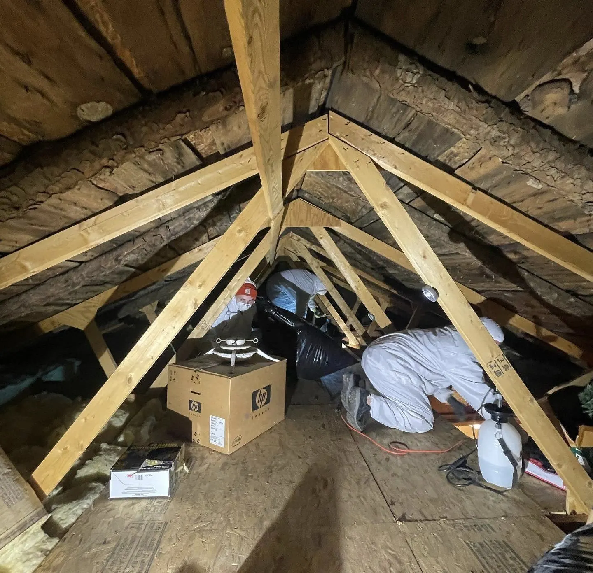

Inspect
We find the entry, the run, and the damage — roofline, vents, foundation, attic, crawl space.
- Full entry-point survey
- Attic / crawl space assessment
- Written findings before work
RODENTX RETURNS — REBUILT TO A HIGHER STANDARD
RodentX is back — rebuilt properly. We find where animals get in, remove them, seal the entry, and monitor that it stays sealed. No guesswork. No loose ends.

01 — THE X STANDARD
Every job follows the same four moves, in the same order. The X is not decoration — it is the seal, the closure, the proof the job is finished.
We find the entry, the run, and the damage — roofline, vents, foundation, attic, crawl space.
Humane, lawful removal matched to the species and the season.
The seal. We close the entry with durable, animal-proof materials — the X that means it stays shut.
We check that the seal holds and the activity stops.
What you get in writing: findings, what was removed, what was sealed and with what, and any follow-up. Warranty: Some exclusion work carries a warranty — coverage for the property is reviewed with you before service begins.
02 — WILDLIFE REMOVAL
Signs, what we do, what we seal — nothing generic. Full dossiers live on the Wildlife Removal page.
Full rodent programs — entry, harborage, and seal.
Read the dossier →Careful, lawful, season-aware work.
Read the dossier →Remove, clean, seal — and keep them out.
Read the dossier →Daytime noise, chewed entries, nesting.
Read the dossier →Yard, crawl space, chimney, and vent wildlife.
Read the dossier →Every animal, one standard: Inspect / Remove / Exclude / Monitor.
See all wildlife removal →03 — SERVICES — BY JOB
Every job has one intent. Pick the job — the page tells you what it is and what you get.
Find the entry, the run, and the damage — in writing.
What an inspection covers →Humane, lawful, species-correct removal.
How removal works →The seal. Durable, animal-proof, listed in writing.
What we seal →Cleanouts, insulation removal, disinfection, insulation installation.
Restore the attic →Check the seal holds and activity stops.
How monitoring works →Documented programs for business.
Built for business →04 — THE COMEBACK
RodentX operated years ago, then stopped. This is not a restart of the old way. It is a rebuild — corporate, documented, and deliberate. Same X. Higher standard.
Service area: Finger Lakes Region, NY only. No street address published — service-area business.
05 — TERRITORY
Finger Lakes Region, NY. Five hubs plus the Corning–Elmira edge, one standard. Keuka is home — Penn Yan / Yates County.
Finger Lakes — West to East
HoneoyeCanandaiguaKeuka ★ HomeSenecaCayugaOwasco
Home base: Penn Yan / Yates County — Keuka Lake.
Smaller towns are served inside these hubs. If your town is in the Finger Lakes Region, tell us your town on the form.
06 — QUESTIONS
What people ask before they book. Full answers live in Resources.
07 — CONTACT
Tell us the animal, the town, and where you’re hearing or seeing it. We reply by phone or email.
Phone: (585) 555-0100Email: contact@rodentxwildlife.comArea: Finger Lakes Region, NY only
We reply by phone or email.
No street address published — service-area business.